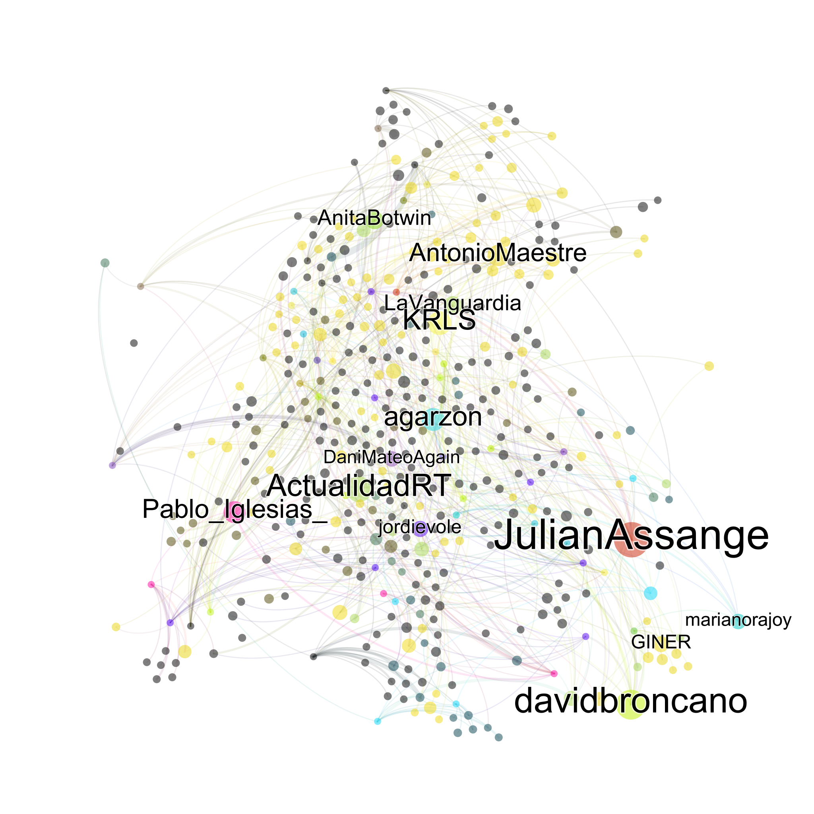

Explain #Catalonia 2017
A Big Data analysis of Referemdum 2017 of 1th October 2017
90,000 people, 420,000 tweets from Spain
A Big Data analysis of Referemdum 2017 of 1th October 2017
90,000 people, 420,000 tweets from Spain
This Image Map show the thoughts of the people captured through their tweets. After have scraped 420,000 tweets (220,000 after record linkage), we have cleaned, tokenized and clustering the terms.
Click on the images to zoom and see the details.
WikiLeaks founder @JulianAssange has talked about a historic independence referendum for the region of Catalonia, using his Twitter account to pump out a pro-independence narrative and to celebrating Catalan nationalism.
Leader of @Podemons, Pablo Iglesias aligns with the independentistas and denounces that "in Spain there are political prisoners".
The journalist of La Sexta, Jordi Évole, has dismantled Puigdemont @KRLS: during the entire interview he seeked contradictions and cracks in the speech of the President.
![@JulianAssange has talked about a historic independence referendum for the region of Catalonia, using his Twitter account to pump out a pro-independence narrative and to celebrating Catalan nationalism. Leader of @Podemons, Pablo Iglesias aligns with the independentistas and denounces that 'in Spain there are political prisoners'.The journalist of La Sexta, Jordi Évole, has dismantled Puigdemont @KRLS: during the entire interview he seeked contradictions and cracks in the speech of the President." />](images/graph.png){kind=link}